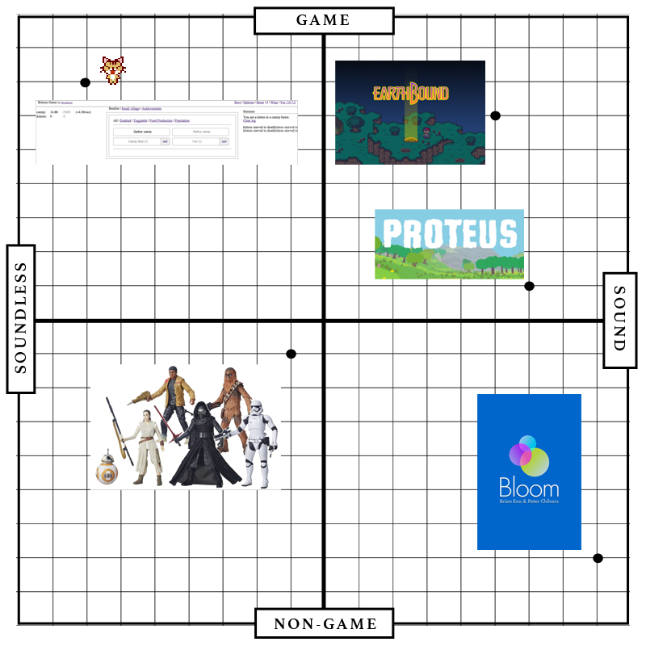

Game Sounds and Flow
The role of game sounds in user play and immersion
Created by Kaitlin Gu / Advisor Finn Brunton
Why I chose to study game sounds
Music sampling:
Why I chose to study game sounds
Music sampling:
- Dom Kennedy, “Locals Only” - Chrono Trigger
- Eminem, J. Black & Masta Ace, “Hellbound” - Soulcalibur
- Joey Bada$$ feat. Chuck Strangers, “Fromda Tomb$” - L.A. Noire

Objectives
Three overarching questions:
- How do game sounds define games?
- How do game sounds provide an immersive environment for the user?
- How do game sounds guide a player through the game?
History of Video Game Music
From sound to soundless
1950s: Soundless video games
- Bertie the Brain
- Cathode-ray amusement device


Early 1980s: 8-bit VGM
- Pong
- Atari
Late 1980s: 16-bit VGM
1990s: 32-bit VGM and CD technologies
Cultural significance
Literature Review
???
Case Studies

PROTEUS
Fragments
Hit the next arrow...
... to step through ...
... a fragmented slide.
Fragment Styles
There's different types of fragments, like:
grow
shrink
fade-out
current-visible
highlight-red
highlight-blue
Transition Styles
You can select from different transitions, like:
None -
Fade -
Slide -
Convex -
Concave -
Zoom
Slide Backgrounds
Set data-background="#dddddd" on a slide to change the background color. All CSS color formats are supported.
Image Backgrounds
<section data-background="image.png">Tiled Backgrounds
<section data-background="image.png" data-background-repeat="repeat" data-background-size="100px">Video Backgrounds
<section data-background-video="video.mp4,video.webm">... and GIFs!
Background Transitions
Different background transitions are available via the backgroundTransition option. This one's called "zoom".
Reveal.configure({ backgroundTransition: 'zoom' })Background Transitions
You can override background transitions per-slide.
<section data-background-transition="zoom">Pretty Code
function linkify( selector ) {
if( supports3DTransforms ) {
var nodes = document.querySelectorAll( selector );
for( var i = 0, len = nodes.length; i < len; i++ ) {
var node = nodes[i];
if( !node.className ) {
node.className += ' roll';
}
}
}
}
Code syntax highlighting courtesy of highlight.js.
Marvelous List
- No order here
- Or here
- Or here
- Or here
Fantastic Ordered List
- One is smaller than...
- Two is smaller than...
- Three!
Tabular Tables
| Item | Value | Quantity |
|---|---|---|
| Apples | $1 | 7 |
| Lemonade | $2 | 18 |
| Bread | $3 | 2 |
Clever Quotes
These guys come in two forms, inline:
“The nice thing about standards is that there are so many to choose from”
and block:
“For years there has been a theory that millions of monkeys typing at random on millions of typewriters would reproduce the entire works of Shakespeare. The Internet has proven this theory to be untrue.”
Intergalactic Interconnections
You can link between slides internally, like this.
Speaker View
There's a speaker view. It includes a timer, preview of the upcoming slide as well as your speaker notes.
Press the S key to try it out.
Export to PDF
Presentations can be exported to PDF, here's an example:
Global State
Set data-state="something" on a slide and "something"
will be added as a class to the document element when the slide is open. This lets you
apply broader style changes, like switching the page background.
State Events
Additionally custom events can be triggered on a per slide basis by binding to the data-state name.
Reveal.addEventListener( 'customevent', function() {
console.log( '"customevent" has fired' );
} );
Take a Moment
Press B or . on your keyboard to pause the presentation. This is helpful when you're on stage and want to take distracting slides off the screen.
Much more
- Right-to-left support
- Extensive JavaScript API
- Auto-progression
- Parallax backgrounds
- Custom keyboard bindings